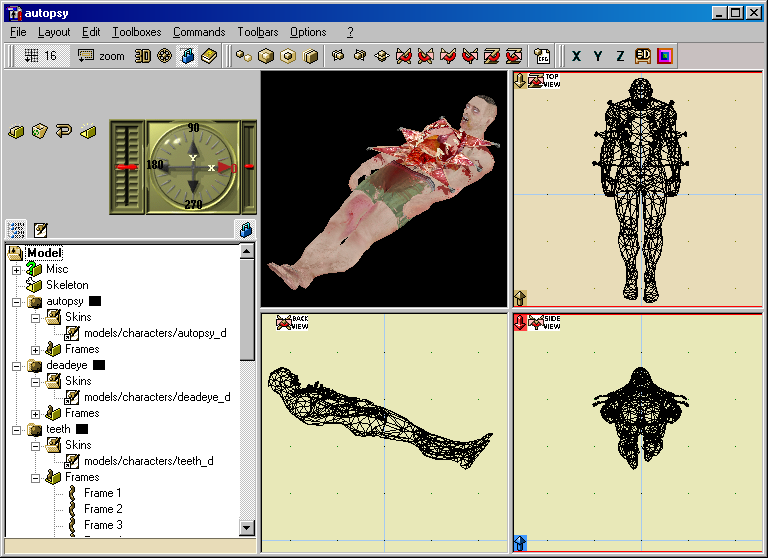

QuArK's Model Structure
Updated 27 Jul 2009
- QuArK Information Base
- 1. Introduction to QuArK
- 1.6. Model-editor in QuArK
|
|
QuArK's Model Structure
Updated 27 Jul 2009
|
Upper levels: - QuArK Information Base - 1. Introduction to QuArK - 1.6. Model-editor in QuArK |
|
1.6.2. QuArK's Model Structure |
[ - - ] |
This section covers more of the technical part, in detail, of QuArK's Model Structure for programming purposes and is very important to understand if you plan to do any code writing for the Model Editor. Occasionally references will be made to the Model Editor's Python code located in the quarkpy and plugins folders as well as areas in the 'QuarkX' section of these Infobase docs. |
|
Index |
|
Components of a Model |
cdunde - 27 Jul 2009 | [ Top ] |
|
A model is a single QuArK Internal Object that can consist of a single or multiple components. The elements that make up a model are stored as "key:value" pairs of the QuArK Internal Object, where there is a key name and a value that goes along with that key name. Also, each of the "key names" CAN BE given a specific type to distinguish what kind of element it is. {'Skins:sg': <QuArK Internal object at 0x01390F78>}The key name is Skins, its type sg (skin group) and its value is another QuArK Internal Object (the skin texture image). This method of using "key:value" pairs runs all the way through as a model's component(s) elements are broken down. A list of the different "type"s of "key"s is shown in the code example below, displayed in blue.  fs = self.explorer.uniquesel the rest of this models types, not being displayed in the tree-view are: The key name can be any arbitrary name, even the short path and name of the model skin file itself, as shown below: {'models/characters/autopsy_d.tga': <QuArK Internal object at 0x01390F78>}The QuArK Internal object, in the above example, is the actual autopsy_d.tga skin texture image file that is stored in memory and can be called upon to display in one of the editor's views by using its key name OR by giving the program functiion the related QuArK Internal object by using its key name. That all depends on what a particular program function needs, just the path and name or the actual image file, to perform its task. |
|
The Model's Mesh(s) |
cdunde - 26 Apr 2007 | [ Top ] |
|
A model is constructed from a mesh, which is a list of triangles grouped together to create its shape. The model can be a single mesh or it can consist of a number of meshes. In QuArK we call these meshes components. And therefore, each component of a model has its own group of triangles which are known as a components Tris Specific as stated in the Quarkx Model Editor section of these Infobase docs. Tris is an abbreviation for triangles. Even though you can think of a component's Tris as a very complex poly, like those used in the QuArK Map Editor, and each triangle as a face of that poly, these triangles are handled differently in the Model Editor. However, like a poly face, each triangle has three vertexes arranged in a specific order which tells which side of that triangle face is facing outwards. Instead of a set of 3 tuples of 3 values each (x, y and z) that give the 3 points of a triangle,
the triangle of a component gives these values for its 3 tuples: 1st item: The triangle’s vertexnumber, also known as its index number, which can be used to call a specific triangle. This can be misleading if you do not understand the differences between the 3 tuples of a standard poly triangle and the triangle of a models component mesh or Tris. This is also discribed in the Quarkx Model Editor section of these Infobase docs. The actual 3 point positions of a components triangle are given by calling the triangle's vertexnumber to retrieve its vertices list which is a set of 3 tuples of 3 values each (x, y and z) that give the 3 points for that triangle. Again, this is briefly covered in the Quarkx Model Editor section of these Infobase docs. I realize all of this can be confusing, so let me give you an example using some actual code that is located in two related sections of the quarkpy\mdlhandles.py file that create and draw the handle for each vertex. In this first section of code we start off by setting up a list that will be used to store all of the handles (line 1), as they are created and drawn. (line 1) h = [ ] A print statement you can use to print it to the QuArK console is this: print "SkinHandle ",quarkx.vect(vtx[1], vtx[2], 0), i, j SkinHandle 40 46 0 74 0 One final thing you might want to notice is the very last item, or argument, that we pass to the class SkinHandle code section is the list of triangle vertices or tri itself. Now for the class SkinHandle part of the code, located above this code, in the same quarkpy\mdlhandles.py file, but I won't go through all of it here, for simplicity. The class SkinHandle section consist of two main parts, the def draw and the def drag sections, the first of the two being simpler and more direct to the point I am making to the code. So we will take a look at the def draw section in part. One basic point about classes here is that we do not pass all of the above arguments directly to the def drag section itself, but to the class that it lies within. From the base class we can then pass it on to the actual def draw section by attaching the word self, meaning the class itself, and because the def draw is within that class we can then use self.triangle and use that arguments data in the draw section. Note how we also changed the arguments variable name from just tri to triangle to make it more clear in the code as to what that item really represents (or actually contains). Now , in the def draw section of code, we will just look at a few lines intermittently to see how it uses this particular argument. First we obtain it from the base class arguments that it receives and redefine it with a new name (line 1). This next part is a little bit tricky to understand, so bear with me. So with that out of the way, we pull those stationary vertexes out of the list, which is a tuple of 3 vertexes (pos 0, 1 and 2), and define each vertex as a vector called fixedvertex (line 10), skipping the first one (lines 3-6) because that is our self drag handle. Which we already have and will be drawing our guide lines from. Something else you might have noticed here is that we do not use position 0 and 1 (x and y) here as you might think, but positions 1 and 2 (y and z) instead. Once we have defined our vector it also becomes a tuple, so now we need to pull out that vertex's positions for X , Y and Z (line 11). Remember, this is done for each line that is drawn as the handle vertex and its triangle are passed to the class SkinHandle from the first section of code. Looking at the actual and complete code in the file will fill in the gaps and help answer any questions of other items shown below. (line 1) triangle = self.triangle (skipping a few lines of code) (line 2) for vertex in triangle: And in the screen shot below you can see these vertex handles for the component deadeye Tris as they are displayed in both the Model Editors views and its 'Skin-view page'. Just remember though, the handles in the Model Editor views, which move the components mesh for the models shape, are NOT the same handles that are shown on the 'Skin-view page', which move the unwrapped components mesh for skinning purposes. So one handle type will NOT effect the other. But both are created and drawn in the same way, they just wind up in different handle lists.
|
|
The Skin-view Mesh(s) |
cdunde - 27 Jul 2009 | [ Top ] |
|
A model is constructed from a mesh, which is a list of triangles grouped together to create its shape. The model can be a single mesh or it can consist of a number of meshes. In QuArK we call these meshes components. And therefore, each component of a model has its own group of triangles which are known as a components Tris Specific as stated in the Quarkx Model Editor section of these Infobase docs. Tris is an abbreviation for triangles. The Skin-view page will display an unwrapped, or flat version, of each of the model's components when it or any of its sub-items have been selected in the tree-view. The Skin-view page works a bit defiantly then the editor's views do, based on the fact that it has no actual triangles. Only what is known as view.handles, view being the view displayed on the Skin-view page itself. Another big difference, at this time, is that unlike all of the other views of the editor which are in a list of its editor.layout.view, the Skin-view page view is never actually added (appended) to that list, on a permanent bases, making it pretty much isolated from the rest of the views of the editor. Because of this I needed to create a global in the quarkpy\mdlhandles.py file called SkinView1 that can be used, when needed, to call that view when the Skin-view page is open. It does seem to be added periodically when the mouse cursor is actually somewhere within the Skin-view page view. As briefly described in the Internal objects related to the Model Editor of the 'QuarkX' section of these Infobase docs, the Skin-view page view uses a model's Component, Frame object's vertices, also known as its views view.handles. There is a lot being said in that last part, so let me break it down for you in more layman's terms as to what it all means exactly. Component : Each model can be made up of one or more Components, or parts, each containing sub-items, as described in the Components of a Model section above, one of which is the frame group that contains that particular components animation frames that gives that component its movement sequences. Frame object's vertices : Each frame has attached to it a list of vertexes or points in
3D space that make up that components Frame, or mesh of triangles for its shape. These vertexes are the
Frame object's vertices which are also the Skin-view page view.handles.
Below is a very small sample of a Skin-view view.handles list. [<quarkpy.mdlhandles.SkinHandle instance at 0x0101AA08>,<quarkpy.mdlhandles.SkinHandle instance at 0x0101AA58>] Each item in this list, as you can see, is an instance of a quarkpy.mdlhandles.SkinHandle and if you look at that Class SkinHandle in the quarkpy\mdlhandles.py folder\file you will see that each instance has these items, or Specifics that make up that SkinHandle, or Frame object's vertices point. def __init__(self, pos, tri_index, ver_index, comp, texWidth, texHeight, triangle): self ----------- being the handle or quarkpy.mdlhandles.SkinHandle instance itself. The data any one of these items contain can be used by simply adding its Specific name to the view.handle like this: vtxpoint = view.handle.pos There are two other functions, as well as several more useful ones, in the quarkpy\mdlutils.py file that you should also be aware of called: Update_Editor_Views: Updates the Editors views once something has changed in the Skin-view, such as synchronized or added 'skin mesh' vertex selections. It can also be used to just update all of the Editor's views only. MakeEditorFaceObject: Creates a QuArK Internal Face Object from 3 selected vertexes in the ModelVertexSelList. This one is unique to the Model Editor in that it uses the same structure as a Map Editor QuArK Internal Face Object, Which should allow the calling of various Map Editor files and functions in the Python code files to use in the Model Editor once the returned items from those functions are converted back into usable data in the Model Editor required format. Both of the above functions have various option settings that can be applied for more specific uses and those option settings and descriptions are in each of their related function description section. One last item to cover are the various selection lists that I have setup for the Model Editor. Each one being specific for their needs and uses. ModelVertexSelList: Used for individual and multi selected Model Editor component mesh vertexes. SkinVertexSelList: Used for individual and multi selected Skin-view skin mesh vertexes. ModelFaceSelList: Used for individual and multi selected Model Editor component mesh triangles (faces). SkinFaceSelList: Used for passing and retaining individual and multi selected Model Editor component mesh triangles (faces) to the Skin-view page at this time. Complete detailed descriptions of each one of these selection lists are given near the top of the quarkpy\mdleditor.py file along with their related list item formats as to what data they require and carry as well as to what their purpose are. It would be a good idea to review that information as more will be added during future development of this editor. One vital point about the SkinVertexSelList list is that it must be changeable, or mutable in Python terms, and the added data within it, or the list will become ineffective and objects will not be able to be updated when moved to work with QuArK. They will simply DISAPEAR ! To make this list mutable it must use square brackets to define it and any items that are added to that list as well, like this: SkinVertexSelList = [] SkinVertexSelList = SkinVertexSelList + [pos, self, tri_index, ver_index] In addition to the above selection lists there are other lists used by the Model Editor, two of which are: view.handles: Covered in detail above earlier. comp.filltris: comp being the currently selected model component or editor.Root.currentcomponent and the actual list filltris which is a list of item settings to draw a component's triangle filled with a specified color and which is also described in the Internal objects related to the Model Editor of the 'QuarkX' section of these Infobase docs. Also doing a word search using comp.filltris will divulge its usage in the Python quarkpy\mdleditor.py file. I realize there is a lot more relating to the editor but this very vital basic works information should help to get acquainted with the QuArK Model Editor inter actions much easer. |
|
Copyright (c) 2009, GNU General Public License by The QuArK (Quake Army Knife) Community - http://quark.sourceforge.net/ |
[ - Top - ] |